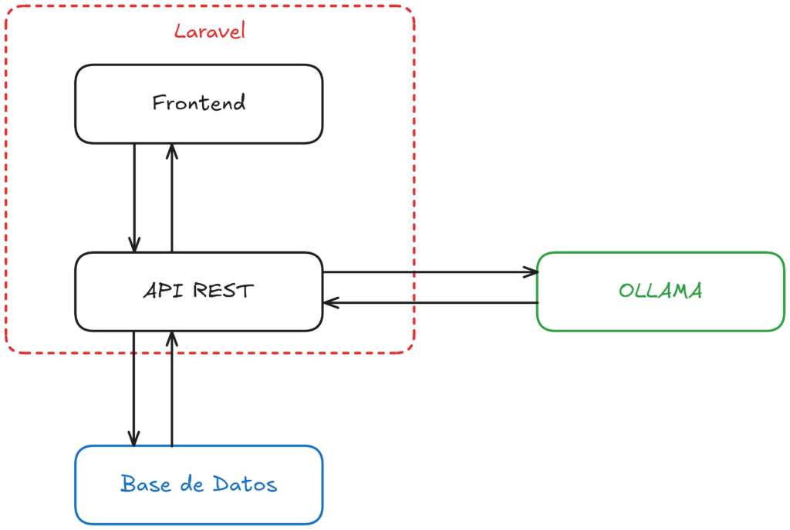

Este proyecto utiliza Laravel para crear una plataforma web que permite a los usuarios acceder y gestionar su propia instancia de un “ChatGPT” de código abierto, aprovechando los modelos de IA libres de Ollama. Ollama es una herramienta que permite integrar modelos de lenguaje avanzados en aplicaciones personalizadas, proporcionando una alternativa flexible y accesible para quienes buscan utilizar IA conversacional sin depender de servicios comerciales centralizados.
Descripción general del sistema
La solución está construida sobre el framework Laravel, lo que proporciona una base robusta para el desarrollo tanto del frontend como del backend. Laravel, conocido por su arquitectura limpia y potente sistema de enrutamiento, facilita la creación de una interfaz de usuario dinámica, además de una administración segura de sesiones y datos.

Autenticación y organización de chats
Uno de los aspectos centrales de la aplicación es su sistema de autenticación. Mediante este sistema, los usuarios pueden crear y gestionar sus cuentas personales, lo que les permite tener sesiones de chat personalizadas. Cada usuario registrado tiene la capacidad de iniciar y almacenar múltiples conversaciones, organizadas de manera que puedan retomarse o revisarse en cualquier momento. Esta estructura asegura que los usuarios tengan una experiencia personalizada y privada, ya que las conversaciones se asocian únicamente a la cuenta de quien las crea.
Interfaz frontend
El frontend está diseñado para ser intuitivo y fácil de usar. Utiliza tecnologías como Blade (de Laravel) para proporcionar una experiencia fluida en la navegación y en la interacción con el sistema de chat. Los usuarios pueden escribir preguntas o comentarios en una interfaz limpia que se conecta de manera directa con el backend. Los mensajes enviados se procesan y se muestra en pantalla la respuesta generada por los modelos de IA de Ollama.
Backend y conexión con Ollama
El backend de la aplicación es responsable de gestionar las peticiones de los usuarios y comunicarse con Ollama para obtener las respuestas generadas por los modelos de IA. Para lograr esto, se ha implementado un sistema REST que permite la interacción entre el frontend y el motor de IA en el servidor. Cada mensaje enviado por los usuarios se envía al backend, que se encarga de procesar la solicitud y devolver una respuesta precisa en función de los modelos disponibles en Ollama.
Gracias a la flexibilidad de Laravel, el backend puede manejar eficientemente estas solicitudes, garantizando una alta disponibilidad y rendimiento, incluso cuando hay múltiples usuarios realizando consultas simultáneamente. Laravel también permite que la lógica del backend sea escalable, permitiendo la integración futura de más modelos de IA o funcionalidades adicionales sin comprometer el rendimiento del sistema.
Almacenamiento de conversaciones
Para mejorar la experiencia de los usuarios, las conversaciones se almacenan en una base de datos. Laravel facilita esta tarea mediante Eloquent ORM, que simplifica el manejo de las consultas y almacenamiento de los datos. Cada usuario tiene su propio historial de conversaciones, lo que permite acceder a ellos en cualquier momento, incluso si la sesión de chat ha finalizado. Esta característica es clave para quienes deseen revisar respuestas anteriores o continuar una conversación en una sesión posterior.
Ventajas de Ollama y modelos de IA libres
Una de las principales ventajas de utilizar Ollama en lugar de otros servicios centralizados es que permite la utilización de modelos de IA de código abierto, lo que ofrece a los usuarios un mayor control sobre las capacidades del sistema. Los usuarios pueden elegir los modelos que mejor se ajusten a sus necesidades, desde modelos más ligeros para respuestas rápidas, hasta modelos más avanzados que pueden manejar consultas más complejas. Al no depender de servicios comerciales como OpenAI, se reduce el costo y se ofrece una mayor flexibilidad en la personalización del sistema.
Conclusión
Este proyecto basado en Laravel y Ollama es una potente solución para quienes buscan implementar su propio sistema de IA conversacional utilizando tecnologías de código abierto. La combinación de un frontend intuitivo, un backend robusto y escalable, y un sistema de autenticación y seguridad sólido hacen de esta aplicación una opción ideal para quienes desean explorar las posibilidades de los modelos de IA en una plataforma personalizada y controlada. La integración con Ollama permite a los usuarios aprovechar los últimos avances en inteligencia artificial, con la libertad de adaptarlos a sus necesidades y preferencias.